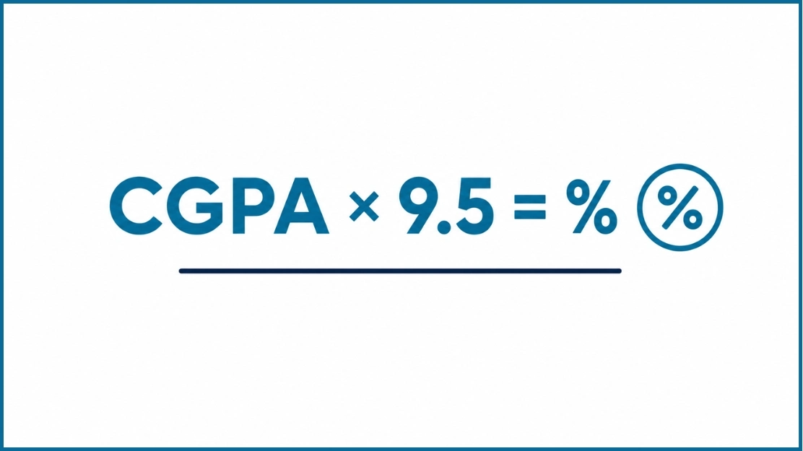

CGPA to Percentage Calculator for University Results
Choose a direction, enter your score
How to Convert CGPA to Percentage

For a 10-point CGPA, multiply it by 9.5. CBSE publishes this multiplier as the indicative percentage for its grade-point results, so a CGPA of 8.2 becomes 8.2 × 9.5 = 77.9%.
To go the other way, divide the percentage by 9.5. A result of 85% is 85 ÷ 9.5 = 8.95 CGPA.
The 9.5 rule is for CGPA out of 10. A CGPA out of 4 works differently: divide by 4 and multiply by 100, so 3.5 becomes 87.5%. The sections below give the formula and a worked value for each scale.
Jump to: formulas, CGPA to percentage chart, percentage to CGPA, marks from CGPA, questions.
CGPA to Percentage Formula for Each Grading Scale
The calculator above has five formula options. Use the row that matches the highest CGPA on your marksheet and the rule your institution follows.
| Calculator option | CGPA to percentage | Percentage to CGPA | Scale |
|---|---|---|---|
| CBSE / Standard | CGPA × 9.5 | Percentage ÷ 9.5 | Out of 10 |
| AICTE India | (CGPA − 0.75) × 10 | (Percentage ÷ 10) + 0.75 | Out of 10 |
| University (× 10) | CGPA × 10 | Percentage ÷ 10 | Out of 10 |
| US 4.0 Scale | (CGPA ÷ 4) × 100 | (Percentage ÷ 100) × 4 | Out of 4 |
| 5-Point Scale | CGPA × 20 | Percentage ÷ 20 | Out of 5 |
4.33 and 7.0 Scales
The calculator has no 4.33 or 7.0 option. For these scales, divide your CGPA by the top score and multiply by 100. On a 4.33 scale, 3.68 ÷ 4.33 × 100 is about 85%. On a 7.0 scale, 5.95 ÷ 7 × 100 is 85%. This is a straight proportion and not an official policy, so confirm it with your university if the result goes on a form.
To get your CGPA on these scales from course grades, use the Canadian 4.33 GPA calculator or the Australian 7-point GPA calculator.
How to Use the CGPA to Percentage Calculator
Pick the Direction
Stay on CGPA → Percentage to convert a CGPA, or tap Percentage → CGPA to convert marks.
Select the Grading Scale
Look at the highest CGPA on your marksheet. If it is 10, choose CBSE, AICTE or × 10. If it is 4, choose US 4.0. If it is 5, choose the 5-point option.
Enter Your Value
Type the number exactly as printed, for example 8.37 and not 8.4. The field shows the allowed range for the scale you picked.
Press Calculate
The result appears with the working underneath it, so you can see which formula was applied. Use Copy to paste it into a form.
CGPA to Percentage Chart for Common Values
These tables use the same formulas as the calculator. Find your CGPA, then read across to the rule your institution follows.
CGPA Out of 10
| CGPA | CBSE (× 9.5) | AICTE | × 10 |
|---|---|---|---|
| 4.33 | 41.14% | 35.8% | 43.3% |
| 5.0 | 47.5% | 42.5% | 50% |
| 5.38 | 51.11% | 46.3% | 53.8% |
| 5.95 | 56.53% | 52% | 59.5% |
| 6.5 | 61.75% | 57.5% | 65% |
| 7.0 | 66.5% | 62.5% | 70% |
| 7.5 | 71.25% | 67.5% | 75% |
| 8.0 | 76% | 72.5% | 80% |
| 8.2 | 77.9% | 74.5% | 82% |
| 8.5 | 80.75% | 77.5% | 85% |
| 9.0 | 85.5% | 82.5% | 90% |
| 10.0 | 95% | 92.5% | 100% |
CGPA Out of 4, 4.33, 5 and 7
| CGPA | Scale | Calculation | Percentage |
|---|---|---|---|
| 2.58 | 4.0 | 2.58 ÷ 4 × 100 | 64.5% |
| 2.74 | 4.0 | 2.74 ÷ 4 × 100 | 68.5% |
| 2.87 | 4.0 | 2.87 ÷ 4 × 100 | 71.75% |
| 3.5 | 4.0 | 3.5 ÷ 4 × 100 | 87.5% |
| 3.68 | 4.0 | 3.68 ÷ 4 × 100 | 92% |
| 3.68 | 4.33 | 3.68 ÷ 4.33 × 100 | about 85% |
| 4.33 | 4.33 | 4.33 ÷ 4.33 × 100 | 100% |
| 4.0 | 5.0 | 4.0 × 20 | 80% |
| 5.5 | 7.0 | 5.5 ÷ 7 × 100 | about 78.57% |
| 5.95 | 7.0 | 5.95 ÷ 7 × 100 | 85% |
The same number means different things on different scales. A CGPA of 3.68 is 92% out of 4 and about 85% out of 4.33. A CGPA of 5.95 is 85% out of 7 and 56.53% out of 10 with the 9.5 rule. Check the top score on your result before you read the chart.
Percentage to CGPA for Common Values
Use the Percentage → CGPA tab for any value. These tables show the most requested ones.
Out of 10
| Percentage | CBSE (÷ 9.5) | AICTE | ÷ 10 |
|---|---|---|---|
| 60% | 6.32 | 6.75 | 6 |
| 70% | 7.37 | 7.75 | 7 |
| 75% | 7.89 | 8.25 | 7.5 |
| 78.6% | 8.27 | 8.61 | 7.86 |
| 85% | 8.95 | 9.25 | 8.5 |
| 90% | 9.47 | 9.75 | 9 |
Out of 4, 4.33, 5 and 7
| Percentage | 4.0 | 4.33 | 5.0 | 7.0 |
|---|---|---|---|---|
| 60% | 2.4 | 2.6 | 3 | 4.2 |
| 70% | 2.8 | 3.03 | 3.5 | 4.9 |
| 75% | 3 | 3.25 | 3.75 | 5.25 |
| 78.6% | 3.14 | 3.4 | 3.93 | 5.5 |
| 85% | 3.4 | 3.68 | 4.25 | 5.95 |
| 90% | 3.6 | 3.9 | 4.5 | 6.3 |
So 85% is 8.95 with the CBSE rule, 9.25 with the AICTE formula and 8.5 with the × 10 rule. On the other scales it is 3.4 out of 4, 3.68 out of 4.33, 4.25 out of 5 and 5.95 out of 7. The value 78.6% is 5.5 out of 7 and 7.86 out of 10 with the × 10 rule.
How to Find Marks From CGPA
A CGPA is built from grade points, so marks come from the percentage. Convert first, then apply the total marks.
Convert CGPA to Percentage
Use the formula for your scale. With the CBSE rule, multiply the CGPA by 9.5.
Apply the Total Marks
Marks = (Percentage ÷ 100) × Total Marks.
The figure is indicative. Your marksheet or university notice is the record that counts.
Which CGPA to Percentage Formula to Use
No single formula fits every institution. These are the common cases.
Bangladesh and Other 4.0 Scale Results
If your CGPA is out of 4.00, choose US 4.0 Scale (÷ 4.0 × 100). A CGPA of 3.75 becomes 93.75%. For an official percentage on a form, ask your university for a conversion statement. If you still need the CGPA itself, use the NSU, BRAC and IUB CGPA calculator or the Bangladesh CGPA calculator.
These are general patterns, not official policy. Last updated .
Common CGPA to Percentage Mistakes
Using 9.5 on a CGPA Out of 4
A 3.5 CGPA times 9.5 gives 33.25%, which is wrong. On a 4.0 scale the same CGPA is 87.5%.
Using a Semester GPA
A semester GPA covers one term. The CGPA covers all terms, so convert the cumulative figure. See CGPA vs GPA for the difference.
Rounding Before You Convert
8.37 × 9.5 is 79.52%, while 8.4 × 9.5 is 79.8%. Enter the CGPA with every decimal on your result.
Typing a Percentage in the CGPA Field
Entering 85 on the CGPA tab triggers a range error. Switch to the Percentage → CGPA tab for marks.
Treating the Result as Official
The calculator gives an approximate conversion. Your transcript or conversion certificate is the document that counts.